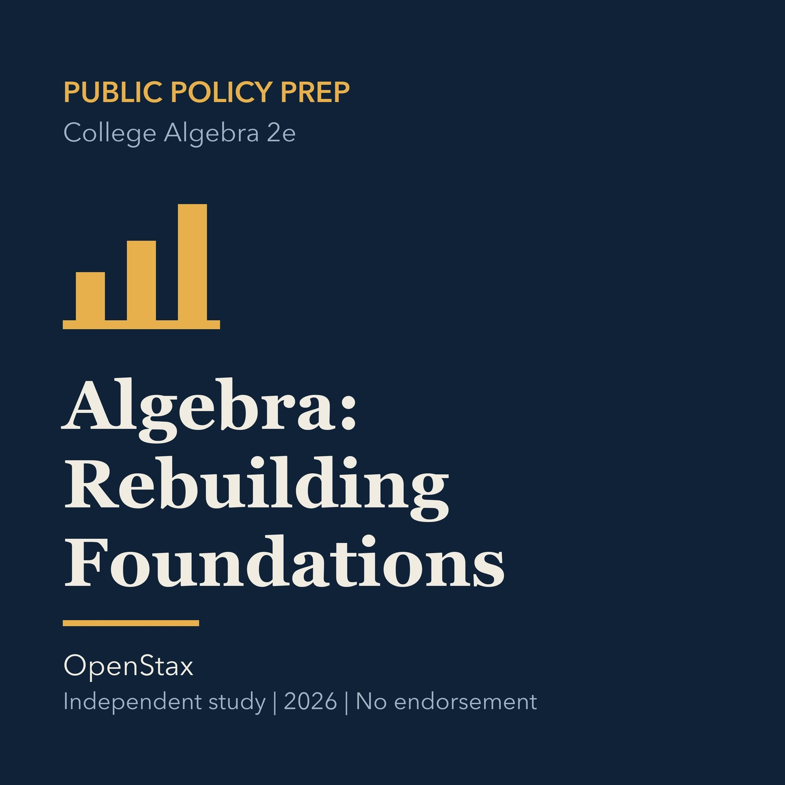

EPISODE 10
Algebra: Rebuilding Foundations Without Rushing
Rebuilds arithmetic and algebra foundations through equations, inequalities, and careful practice.

- Stable GUID
d407d811-b8a7-5952-a7fa-0ed8645e867b- Release
- public-policy-prep-v2026.1
- SHA-256
c12f47f291ce53ea5f9cc79ea51f1905a4deb1790246db89b7754ab7c867cb09